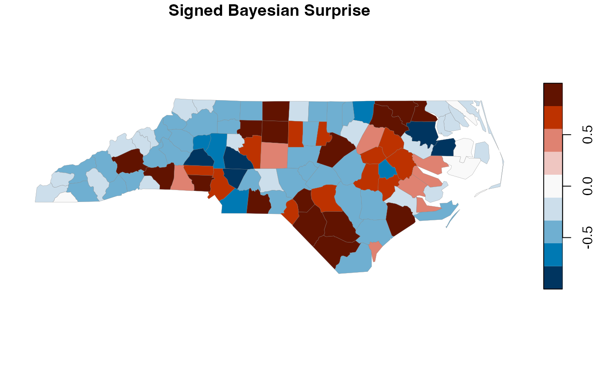

Main function to compute Bayesian surprise for spatial or tabular data. This measures how much each observation updates beliefs about a set of models, highlighting unexpected patterns while de-biasing against known factors.
Usage
# S3 method for class 'sf'
surprise(
data,
observed,
expected = NULL,
sample_size = NULL,
models = c("uniform", "baserate", "funnel"),
prior = NULL,
signed = TRUE,
...
)
surprise(
data,
observed,
expected = NULL,
sample_size = NULL,
models = c("uniform", "baserate", "funnel"),
prior = NULL,
signed = TRUE,
normalize_posterior = TRUE,
...
)
# S3 method for class 'data.frame'
surprise(
data,
observed,
expected = NULL,
sample_size = NULL,
models = c("uniform", "baserate", "funnel"),
prior = NULL,
signed = TRUE,
normalize_posterior = TRUE,
...
)
# S3 method for class 'tbl_df'
surprise(data, ...)Arguments
- data
Data frame, tibble, or sf object
- observed
Column name (unquoted or string) or numeric vector of observed values
- expected
Column name or vector of expected values (for base rate model). If NULL and models include base rate, computed from observed.
- sample_size
Column name or vector of sample sizes (for funnel model). Defaults to
expectedif not provided.- models
Model specification. Can be:
A
bs_model_spaceobjectA character vector of model types: "uniform", "baserate", "gaussian", "sampled", "funnel"
A list of
bs_modelobjects
- prior
Numeric vector of prior probabilities for models. Only used when
modelsis a character vector or list.- signed
Logical; compute signed surprise?
- ...
Additional arguments passed to model likelihood functions
- normalize_posterior
Logical; if TRUE (default), normalizes posteriors before computing KL divergence. This is the standard Bayesian Surprise calculation. If FALSE, uses the unnormalized per-region posterior weights used by the original Correll & Heer JavaScript demo; this option is retained only for legacy comparison.
Value
For data frames: the input with surprise (and optionally
signed_surprise) columns added, plus a surprise_result attribute.
For sf objects: a bs_surprise_sf object.
Examples
# Using sf package's NC data
library(sf)
nc <- st_read(system.file("shape/nc.shp", package = "sf"), quiet = TRUE)
# Basic usage with default models
result <- surprise(nc, observed = SID74, expected = BIR74)
# With specific model types
result <- surprise(nc,
observed = "SID74",
expected = "BIR74",
models = c("uniform", "baserate", "funnel")
)
# With custom model space
space <- model_space(
bs_model_uniform(),
bs_model_baserate(nc$BIR74)
)
result <- surprise(nc, observed = SID74, models = space)
# View results
plot(result, which = "signed_surprise")
